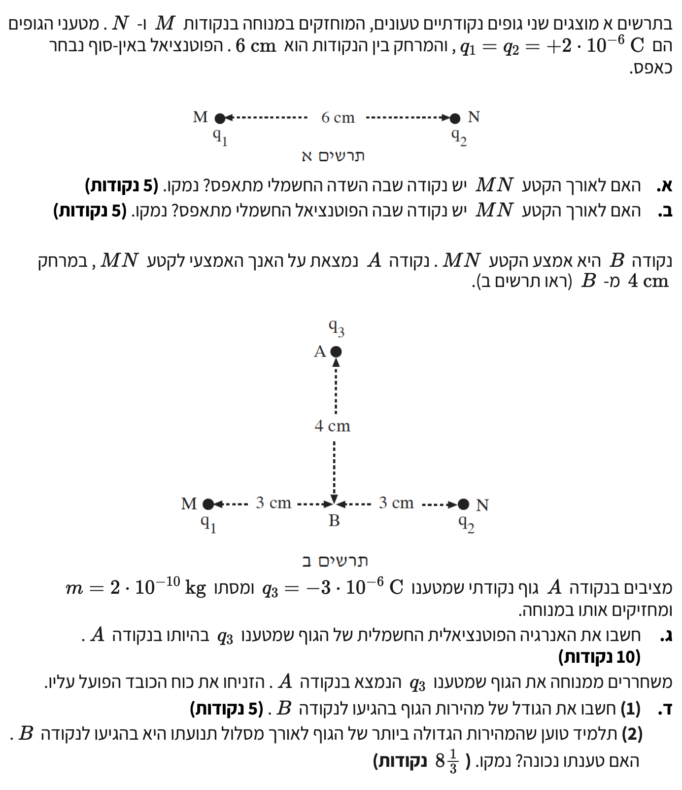
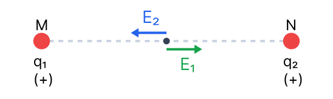
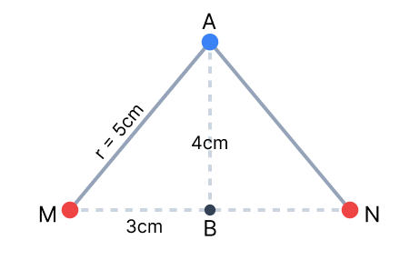
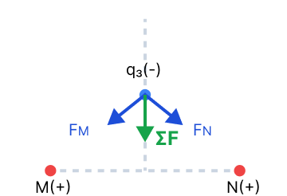

פתרון מלא, מודרך ומוסבר צעד-אחר-צעד הכולל תרשימים ופירוט מלא.
בתחילת השאלה, לפני סעיף א', מוגדרים הנתונים הבאים:

עקרון הסופרפוזיציה לשדות (חיבור וקטורי): השדה הכולל בנקודה הוא הסכום הווקטורי של השדות שכל מטען יוצר בנפרד.
השדה החשמלי הוא וקטור. מכיוון ששני המטענים חיוביים, כיוון השדה שכל אחד מהם מייצר הוא החוצה ממנו.
אם נבחר נקודה על הקטע שבין המטענים, השדה מ-\( q_1 \) יפנה ימינה, והשדה מ-\( q_2 \) יפנה שמאלה. מכיוון שהשדות מנוגדים בכיוונם, הם עשויים לבטל זה את זה.

כדי שהשדה הכולל יתאפס, הגדלים של השדות חייבים להיות שווים: \( E_1 = E_2 \).
מכיוון שנתון לנו ש- \( q_1 = q_2 \), נקבל מיד שחייב להתקיים \( r_1^2 = r_2^2 \), כלומר \( r_1 = r_2 \).
זה קורה בדיוק באמצע הקטע המחבר בין שני המטענים.
כן. בנקודת האמצע של הקטע MN השדה החשמלי מתאפס, משום ששני המטענים יוצרים שדות שווים בגודלם ומנוגדים בכיוונם, המבטלים זה את זה.
עקרון הסופרפוזיציה לפוטנציאלים (חיבור סקלרי): הפוטנציאל הכולל בנקודה הוא חיבור אלגברי (סקלרי, כמו מספרים רגילים) של הפוטנציאלים מכל מטען.
בשונה משדה, פוטנציאל חשמלי הוא סקלר (אין לו כיוון, רק גודל וסימן). הפוטנציאל הכולל בנקודה כלשהי על הקטע יהיה סכום הפוטנציאלים:
כיוון שהמרחקים \( r_1, r_2 \) חיוביים, ושני המטענים חיוביים (\( q_1 > 0 \), \( q_2 > 0 \)), אנו למעשה מחברים שני מספרים חיוביים לחלוטין.
סכום של שני מספרים חיוביים תמיד יהיה גדול מאפס ולא יכול להתאפס.
לא. לא קיימת נקודה על הקטע שבה הפוטנציאל מתאפס. הפוטנציאל הוא סקלר, ומכיוון ששני המטענים חיוביים, סכום הפוטנציאלים בכל נקודה חייב להיות חיובי.
ראשית, נמצא את המרחק של כל אחד מהמטענים (M ו-N) אל הנקודה A בעזרת משפט פיתגורס. נוצר לנו משולש ישר זווית:
בגלל הסימטריה, המרחק מ-N ל-A זהה: \( r_{NA} = 0.05 \text{ m} \).

כעת, נחשב את הפוטנציאל הכולל שיוצרים המטענים \( q_1 \) ו- \( q_2 \) בנקודה A. הקבוע \( k = 9 \cdot 10^9 \).
כעת, כדי למצוא את האנרגיה הפוטנציאלית של המטען \( q_3 \) בנקודה זו, נכפיל את המטען שלו בפוטנציאל. שימו לב להציב את סימן המטען (שלילי)!
האנרגיה הפוטנציאלית החשמלית של הגוף בנקודה A היא \(-2.16 \text{ J}\).
על מנת להשתמש בחוק שימור האנרגיה, עלינו למצוא קודם את האנרגיה הפוטנציאלית של הגוף בנקודה B. נחשב את הפוטנציאל בנקודה B, כשהפעם המרחק מהמטענים הוא \( r_{MB} = r_{NB} = 0.03 \text{ m} \).
נחשב את האנרגיה הפוטנציאלית בנקודה B:
כעת נפעיל את חוק שימור האנרגיה בין נקודה A (שם המהירות אפס) לנקודה B:
נעביר אגפים כדי לבודד את האנרגיה הקינטית ב-B, ולאחר מכן נציב בנוסחת האנרגיה הקינטית:
נוציא שורש למציאת המהירות:
גודל מהירות הגוף בהגיעו לנקודה B הוא \(1.2 \cdot 10^5 \text{ m/s}\).
על פי משפט עבודה ואנרגיה, עבודת הכוחות הלא משמרים שווה לשינוי באנרגיה המכנית הכוללת (\( W_{\text{םירמשמ אל}} = \Delta E \)). מאחר שעל הגוף פועלים כוחות משמרים בלבד (כוחות חשמליים) וכוח הכובד מוזנח, מתקיים \( W_{\text{םירמשמ אל}} = 0 \), ולכן האנרגיה המכנית הכוללת של המערכת נשמרת לאורך כל התנועה: \( E_k + U_E = \text{const} \).
אנרגיה פוטנציאלית חשמלית של גוף נקודתי מוגדרת על ידי המכפלה של מטענו בפוטנציאל בנקודה: \( U_E = q_3 \cdot V \).
מכיוון שמטען הגוף הוא שלילי (\( q_3 = -3 \cdot 10^{-6} \text{ C} < 0 \)), המכפלה הופכת את היחס בין הפוטנציאל לאנרגיה הפוטנציאלית: ככל שהפוטנציאל החשמלי גדול יותר, כך האנרגיה הפוטנציאלית נמוכה (שלילית) יותר.
על פי נתוני השאלה והחישובים הקודמים, הפוטנציאל החשמלי בנקודה B הוא \( V_B = 1.2 \cdot 10^6 \text{ V} \), בעוד שבנקודה A הוא \( V_A = 7.2 \cdot 10^5 \text{ V} \). לאורך ציר התנועה מהנקודה A אל נקודה B, המרחק מהמטענים החיוביים הולך וקטן, ולכן הפוטנציאל החשמלי \( V \) הולך וגדל עד שהוא מגיע לערכו המקסימלי בנקודה B.
עקב כך, בנקודה B האנרגיה הפוטנציאלית החשמלית \( U_E \) מגיעה לערכה המינימלי. לפי חוק שימור האנרגיה המכנית, נקודה שבה האנרגיה הפוטנציאלית היא מינימלית היא בהכרח הנקודה שבה האנרגיה הקינטית \( E_k \) היא מקסימלית. מכאן שגם גודל המהירות של הגוף מגיע לשיאו בנקודה B.
נבחן את הכוח השקול הפועל על הגוף לאורך מסלולו כדי לתמוך בטענה דרך חוקי ניוטון. מהירות הגוף מגיעה לערכה המקסימלי ברגע שהתאוצה מתאפסת ומחליפה סימן (מכוח מאיץ לכוח מעכב).
נסרטט תרשים כוחות (FBD) הפועלים על המטען \( q_3 \) (שהוא שלילי) כאשר הוא נמצא בנקודה כלשהי על הציר בין A ל-B:

כפי שניתן לראות בתרשים, כל אחד מהמטענים החיוביים (M ו-N) מושך את המטען השלילי אליו. בגלל הסימטריה, הרכיבים האופקיים (בציר x) של הכוחות שווים ומנוגדים, ולכן מבטלים זה את זה.
הרכיבים האנכיים של שני הכוחות מצביעים כלפי מטה, לעבר נקודה B. כלומר, לאורך כל הדרך מ-A ל-B, פועל על הגוף כוח שקול בכיוון התנועה. כתוצאה מכך הגוף מאיץ וגודל המהירות שלו גדל.
כאשר הגוף מגיע בדיוק לנקודה B (אמצע הקטע), הכוחות מ-M ו-N מושכים אותו שמאלה וימינה, ולכן מתבטלים לחלוטין. בנקודה זו הכוח השקול הוא אפס (\( \Sigma F = 0 \)) ולכן התאוצה היא אפס.
ברגע שהגוף חוצה את נקודה B וממשיך מטה, הכוחות מ-M ו-N עדיין מושכים אותו לעברם, כך שהכוח השקול כעת מצביע למעלה, בחזרה לכיוון B (נגד כיוון התנועה). מכאן, גודל המהירות יתחיל לקטון.
טענת התלמיד נכונה לחלוטין משני שיקולים אלה. שיקול האנרגיה מראה כי בנקודה B האנרגיה הפוטנציאלית היא מינימלית ולכן הקינטית (והמהירות) מקסימלית. שיקול הכוחות מראה כי הגוף מאיץ לאורך כל הדרך מ-A ל-B ומחל בנקודה B להתחיל לקטון במהירותו.